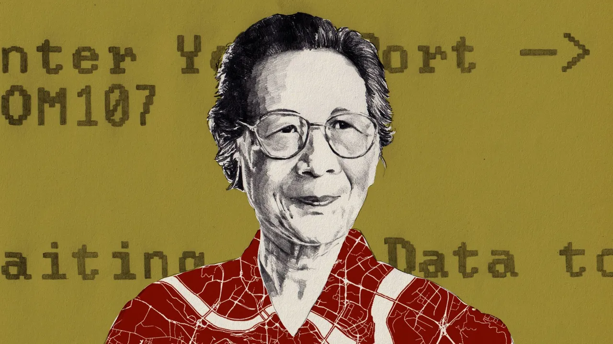

Xia Peisu
by Yingyan Liu
Isolated from the rest of the world, one woman pushed computing from a geeky obsession into a transformative industry.
In the aftermath of war and political upheaval, Xia shaped a new field of science and a new industry in China. Through both her technological innovations and the many students she taught, Xia‘s influence resonates throughout China’s computing world today.